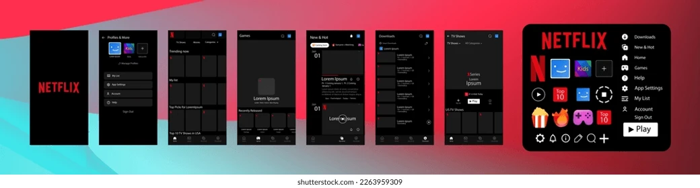
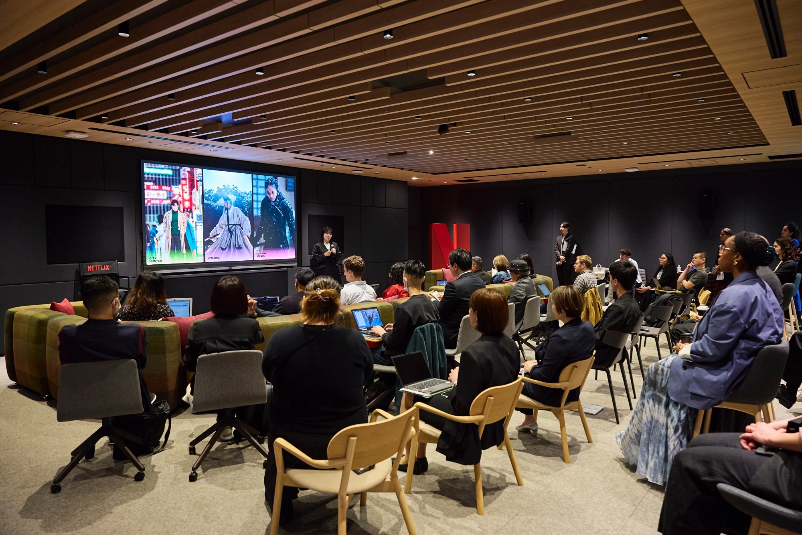

Working at Netflix in 2026 remains one of the most coveted career moves in the modern workforce. Few organisations in the history of the modern workplace have inspired as much fascination, admiration, and debate as the Los Gatos-headquartered streaming giant that fundamentally rewired how humanity entertains itself. With over 300 million paid memberships across more than 190 countries, Netflix is no longer just a tech company or a media company. It is a global cultural force — and for millions of ambitious professionals, it represents the gold standard of where they want to build their career.
But what is it actually like to work at Netflix? What departments does it run? What kinds of roles does it hire for? What traits and values does it genuinely prize in the people it brings on board? And — most practically — how do you position yourself to be noticed?
This guide covers all of that in depth. Whether you are an engineer, a creative, a data analyst, a marketer, or a finance professional, you have come to the right place. You may also want to compare with our Working at Amazon US guide if you're weighing up top-tier tech employers.
Also on Talent Loop
Ready to Explore Netflix Career Opportunities?
JobHunt Explorer is your gateway to discovering available openings and understanding exactly how to approach your application for a company of Netflix's calibre.
Explore Netflix Opportunities →Disclosure: Some links in this article are affiliate links. Talent Loop may earn a commission if you register through them, at no cost to you.
The Netflix Story: From DVD Mailer to Global Giant
Netflix was founded in 1997 by Reed Hastings and Marc Randolph in Scotts Valley, California. At the time, the company's revolutionary concept was deceptively simple: rent DVDs online and deliver them by mail, eliminating the late fees that plagued traditional video rental stores. It was a quietly disruptive beginning — the kind of humble origin story that, in retrospect, perfectly foreshadows the larger disruptions to come.
By 2007, Netflix had pivoted to streaming, making its entire library available on demand over the internet. That decision set in motion a chain of events that would eventually collapse Blockbuster, reshape Hollywood, and create an entirely new category of global entertainment company. Today, Netflix produces and distributes its own original films, television series, documentaries, stand-up specials, and even video games — all under one roof, all available at the tap of a screen.
The scale is staggering. Netflix employs over 12,000 people globally, operates in virtually every country on earth, and generates annual revenues in the tens of billions of dollars. Shows like Stranger Things, The Crown, Squid Game, and Wednesday have become genuine global phenomena, transcending language and cultural boundaries in ways that were previously unimaginable.
But Netflix's influence extends beyond entertainment. The company is widely regarded as having produced one of the most influential corporate culture documents in business history — a deck of slides originally written in 2009 that has since been viewed over 11 million times and studied in business schools worldwide. Browse our jobs board for current Netflix openings.
Netflix's Organisational Structure
One of the most immediately striking things about Netflix's internal architecture is how deliberately it resists complexity. Unlike traditional corporate hierarchies, Netflix operates with a deliberately flat, function-based organisational structure that emphasises speed, autonomy, and direct accountability.
At the executive level, the company is co-led by Ted Sarandos (Co-CEO, overseeing content strategy) and Greg Peters (Co-CEO, overseeing product, advertising, and consumer experience). Below the co-CEOs sit a lean C-suite including Spencer Neumann (CFO), Eunice Kim (CPO), Elizabeth Stone (CTO), Marian Lee (CMO), and Sergio Ezama (Chief Talent Officer).
Below the C-suite, Netflix structures its international business by four primary geographic regions: North America, Latin America, EMEA, and Asia-Pacific. Netflix also regularly assembles cross-functional project teams — agile groups central to how Netflix moves quickly on content development, technological innovation, and market expansion.
"You get better outcomes when employees have the information and freedom to make decisions for themselves. We hire unusually responsible people who thrive on this openness and freedom." — Netflix Culture Memo
The Major Departments at Netflix
Netflix is simultaneously a technology company, a media company, a creative studio, a global marketing operation, and a data science powerhouse. Its internal departments reflect that breadth.
Engineering
The backbone of Netflix's technical infrastructure. Spans Ads Engineering, Commerce Engineering, Infrastructure, Games Engineering, and Member Systems & ML Engineering.
Content & Creative
Responsible for developing, commissioning, producing, and distributing original series, films, documentaries, stand-up specials, and interactive content globally.
Product
Shapes the user experience across every device — from UI/UX design to personalisation algorithms and discovery features.
Data & Insights
Powers Netflix's decision-making at every level, from content greenlighting and pricing to recommendation systems and subscriber growth modelling.
Marketing
Manages global brand strategy, campaign execution, partner marketing, and the promotion of Netflix originals across international markets.
Finance & Strategy
Manages financial planning, forecasting, investor relations, and the strategic commercialisation of products across platforms.
Talent & HR
Oversees hiring, culture, compensation strategy, performance, and the overall employee experience across Netflix's global workforce.
Legal & Policy
Handles intellectual property, compliance, regulatory affairs, content licensing, and policy advocacy across multiple jurisdictions.
Games
A rapidly growing division building titles, infrastructure, and technology for Netflix's gaming initiative — available to all subscribers at no additional cost.
Engineering in Depth
The Engineering division at Netflix is one of the most technically sophisticated teams in the world. It includes dedicated units for Ads Engineering, Commerce Engineering, and Infrastructure Engineering — the backbone that powers Netflix's delivery of content to hundreds of millions of devices simultaneously. Netflix's engineering philosophy prizes individual ownership and technical excellence over process and committee decision-making.

Content & Creative
Netflix's content operation is one of the largest and most ambitious in entertainment history. The content division encompasses legal, finance, marketing, production operations, and post-production — making it a deeply interdisciplinary business unit that draws talent from across the creative and corporate spectrum.
Interested in opportunities at Netflix? JobHunt Explorer helps you find and track openings at companies like Netflix before the crowd does.
Start Exploring →The Netflix Culture: Freedom, Responsibility & the Dream Team
No conversation about working at Netflix can progress very far without confronting its culture. The now-legendary Netflix Culture Memo — first written in 2009 and updated iteratively since — has been described as "the most important document ever to come out of Silicon Valley." Understanding it is essential for anyone seriously considering a career there.
People Over Process
The core of Netflix's culture is its absolute insistence on people over process. Netflix's vacation policy is two words — "Take vacation." Its expenses policy is five — "Act in Netflix's best interests." This intentional minimalism is a deliberate structural choice designed to preserve speed, creativity, and employee autonomy as the company grows.
The Dream Team Concept
Netflix does not aspire to be a family. It aspires to be a dream team — a collection of the best performers in every position, working toward ambitious shared goals. Families tolerate underperformance out of loyalty. Dream teams maintain high standards because every member's contribution genuinely affects the whole.
The Keeper Test
Central to Netflix's talent management philosophy is the Keeper Test: managers are regularly asked "If this person told me they were leaving tomorrow, would I fight hard to keep them?" If the answer is no, Netflix's position is to part ways quickly — with generous severance — rather than allow underperformance to persist.
Radical Honesty & Candour
Netflix prizes open, direct communication at every level. Employees are expected to share candid feedback upward, downward, and laterally — not as an aggressive act, but as a form of mutual respect. At Netflix, surfacing a problem early is considered far more valuable than diplomatic silence.
Core Netflix Values
🎥 Watch: Reed Hastings on Building Netflix's Culture

Reed Hastings discusses talent density, the Keeper Test, and the philosophy behind Netflix's famous culture memo.
What Netflix Offers Its Employees
Top-of-Market Compensation
Netflix does not operate a traditional salary band system. Instead, it commits to paying every employee at the top of their personal market — a continuous judgment about what that specific individual could earn at a peer company. If the market for a skill set increases, Netflix adjusts proactively rather than waiting for an annual review cycle.
| Role | Typical Total Compensation (US, 2026) |
|---|---|
| Software Engineer (Entry Level) | $70,000 – $175,000 |
| Software Engineer (Mid-Level) | $175,000 – $320,000 |
| Senior Software Engineer | $280,000 – $500,000+ |
| Product Manager | $150,000 – $350,000 |
| Senior Product Manager | $280,000 – $500,000+ |
| AI / ML Engineer (Senior) | $400,000 – $700,000+ |
| Data Scientist | $130,000 – $380,000 |
| Content Executive / Director | $120,000 – $350,000+ |
Figures are based on publicly reported data and industry sources — actual compensation varies by role, location, and experience.
The Work-Life Philosophy
For salaried employees there is no prescribed vacation policy, no set number of days off, and no fixed holiday calendar. The company's position is simple: take the time you need to bring your best self to work. In practice, this freedom works well for self-disciplined, high-output individuals who prefer autonomy to structure.
Benefits Package
Key components typically include: comprehensive medical, dental, and vision coverage; mental health support resources; 401(k) with employer match; stock option programme; generous family-forming benefits covering fertility, surrogacy, and adoption; paid parental leave; and charitable donation matching up to $20,000 per year.

Types of Roles Netflix Hires For
Netflix's hiring covers an exceptionally wide range of functions, disciplines, and experience levels. Here is a structured overview of the major role families.
Technology & Engineering Roles
Roles span the full software engineering spectrum — backend, frontend, full-stack, mobile (iOS and Android), and platform engineering. More specialised positions include Site Reliability Engineers, Machine Learning Engineers, Data Engineers, Security Engineers, and a growing Games Engineering team.
Product & Design Roles
Product managers at Netflix work at the intersection of technical complexity, user psychology, and business strategy. Key roles include Product Manager, Senior Product Manager, UX Researcher, UX Designer, and a growing team of AI Product Managers focused on integrating generative AI capabilities.
Content & Creative Roles
These include Vice Presidents and Directors of Content (regional and genre-specific), Creative Executives, Development Executives, Production Executives, Physical Production Managers, Post-Production Supervisors, Content Acquisition Managers, and Localisation Specialists.
Data Science, Finance, Marketing & Beyond
Netflix is one of the most data-driven organisations on earth. Data Science roles span consumer insights, content performance analytics, financial modelling, and experimentation. Marketing roles range from Brand Marketing Manager to Partner Marketing Director and Motion Designer. The Finance & Strategy team works across commercial analysis, business planning, and executive decision support.
See what roles are currently open at Netflix. JobHunt Explorer aggregates opportunities across all departments in one place.
Browse Available Roles →The Talent Profile Netflix Looks For
Netflix's ideal candidate profile is both less restrictive and more demanding than most people expect. Less restrictive, because Netflix does not fetishise pedigree or specific universities. More demanding, because what it requires goes deeper than credentials.
Values Alignment Above Credentials
Netflix is unusually explicit that cultural fit is a hiring prerequisite, not a nice-to-have. A candidate who has spent three years building meaningful work at a lesser-known company — but who demonstrates genuine curiosity, analytical rigour, and good judgment in ambiguous situations — may be more competitive than an Ivy League graduate who cannot articulate their reasoning clearly.
High Performance Orientation
Netflix does not try to hide the fact that it expects a great deal from its people. The company measures success by outcomes, not hours — but it expects the outcomes to be exceptional. Employees who are comfortable with ambiguity, take ownership of problems end-to-end, and hold themselves to a high standard without needing external structures to enforce it, thrive at Netflix.
Communication Clarity
Given the flatness of the organisation and the emphasis on candour, the ability to communicate clearly and directly — in writing, in meetings, and in difficult conversations — is a practical survival skill at Netflix, not merely a soft skill.
Comfort with the Keeper Test
Being hired at Netflix means implicitly accepting that your tenure will be evaluated on an ongoing basis against a high standard. If you are the kind of person who consistently delivers at a high level, takes ownership, and continues to grow, the Keeper Test is not a threat — it is a framework that protects the quality of the team you work with. Compare this with Amazon's Bar Raiser system, which serves a similar purpose in the hiring process.
How to Position Yourself to Get Hired at Netflix
1. Internalise the Culture Memo
Read Netflix's Culture Memo in full — more than once. The candidates who succeed in Netflix interviews are those who can demonstrate that they actually live the values, not just recite them. Think carefully about which of your past experiences best illustrate judgment, selflessness, courage, and curiosity.
2. Build Deep Expertise in Your Domain
Netflix does not value generalism above specialisation. Your application will be strongest when it leads with a clear, credible area of depth. Breadth is a bonus; mastery is the prerequisite.
3. Demonstrate Ownership & Impact
Netflix's interview process is heavily focused on behavioural evidence. Interviewers want to understand the specific decisions you made, the constraints you navigated, and the outcomes you drove. The STAR format (Situation, Task, Action, Result) is a useful structure — but go beyond it to show you owned the problem end-to-end.
4. Practise Radical Candour in Interviews
In Netflix interviews, being direct and honest about your thinking — including your uncertainties and past mistakes — is valued over polished corporate performance. Being genuinely candid about where you have failed, what you learned, and how you would approach things differently is not a weakness. It is a green flag.
Is Netflix Right for You?
Netflix is not the right employer for everyone — and to its credit, the company does not pretend otherwise.
Netflix is likely a strong fit if you:
- Are a self-directed, high-output individual who thrives with autonomy and minimal supervision
- Genuinely welcome candid feedback and can both give and receive it constructively
- Hold yourself to a high standard intrinsically, not because external accountability forces you to
- Are intellectually curious and regularly seek to understand things outside your immediate function
- Are motivated by impact and outcomes rather than titles and tenure
Netflix may not be the best fit if you:
- Prefer highly structured environments with clear rules, regular check-ins, and detailed guidance
- Value long-term job security above high-performance standards
- Find direct, candid feedback difficult to receive or give
- Need extensive development support before you can contribute at a high level
Glassdoor reviewers rate Netflix's culture at 4.3 out of 5, with 85% of respondents saying they would recommend the company to a friend and 92% approving of the CEO. Not sure which top employer fits you best? Take our free career assessment to find out.
Frequently Asked Questions: Working at Netflix
Final Thoughts: One of the World's Most Exciting Career Opportunities
Netflix is not merely a streaming platform. It is one of the defining companies of the 21st century — a genuine pioneer that has reshaped entertainment, technology, organisational design, and global culture in ways that will be studied for decades. Working there, for the right person, is not just a job. It is a front-row seat at the ongoing transformation of an entire industry.
The company's hiring standards are high because they have to be. But those high standards are paired with equally high rewards: compensation at the top of the market, genuine autonomy, access to colleagues who will push you to become better, and work that has real, measurable impact on how hundreds of millions of people experience culture and entertainment.
Use every advantage available to you. Research deeply. Understand the culture before you apply. Build the specific expertise your target function demands. And use smart tools to surface opportunities early, before the competition arrives. You might also benefit from reading our Amazon career guide to compare high-performance cultures before committing to an application.
🎥 Watch: How to Get a Job at Netflix (2026 Guide)

A tech recruiter breaks down exactly how people land high-paying jobs at Netflix, including remote positions and culture memo alignment.
Not sure Netflix is the right fit? Take our free career assessment and let us match you to the employers and roles best suited to your skills, experience, and goals.
Take Free Career Assessment →